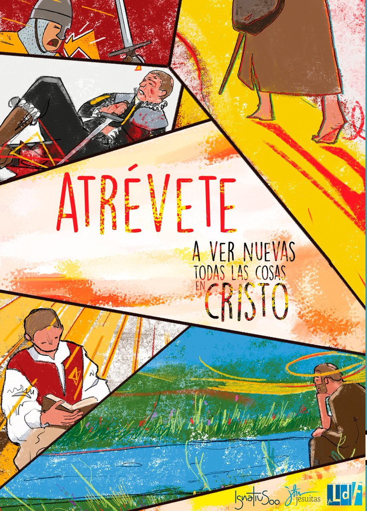

"Tu verdad aumentará en la medida que sepas escuchar la verdad de los otros" Martin Luther King Jr.
¿Has oido hablar alguna vez de lo que es la Justicia Social?. La justicia social solo puede definirse a partir del hecho concreto de la injusticia social. En 2007, las Naciones Unidas proclamaron el 20 de febrero de cada año, como Día Mundial de la Justicia Social. Marthin Luther King, en 1963 compartió un discurso que marcaría la vida de muchas personas.
ATRÉVETE a ver nuevas todas las cosas en Cristo.
En el curso 21-22 tenemos una celebración muy especial: el centenario de la conversión de Ignacio de Loyola.
Comienza el 20 de mayo, fecha en la que hace 500 años un cañonazo en Pamplona dio un vuelco a su vida.
Nuestra campaña gira siempre en torno a una parte del libro de los Ejercicios Espirituales que el mismo Ignacio
escribió, este año es la Meditación de dos banderas. Bien, pues ambas cosas, esta meditación y su conversión,
están fuertemente unidas.
